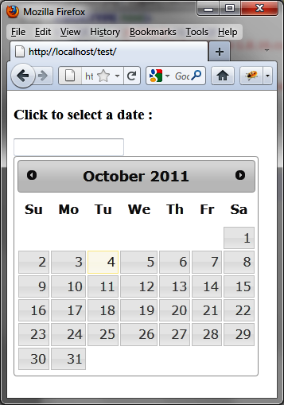

{% include JB/setup %}
{% raw %}
<div>
<div class="calibre13"></div><div class="book" title="Chapter 8. Datepickers"><div class="book"><div class="book"><div class="book"><div class="calibre13"></div><h1 class="title1"><a id="datepickers" class="calibre1"></a>Chapter 8. Datepickers</h1></div></div></div><p class="calibre7">Datepickers allow users to enter dates easily and visually, taking
  into account the various linguistic constraints in different countries
  (names of days and months, date <span class="firstname">format).</span></p><div class="book" title="Basic Principles of Datepickers"><div class="book"><div class="book"><div class="book"><h1 class="title2"><a id="basic_principles_of_datepickers" class="calibre1"></a>Basic Principles of Datepickers</h1></div></div></div><p class="calibre7">Suppose we want to write the HTML code to display the calendar shown
    in <a class="ulink" href="ch08.html#a_calendar_in_the_html_page" title="Figure 8-1. A calendar in the HTML page">Figure 8-1</a>. This calendar appears
    when users click in the input field for entering a date. Months can scroll
    with the arrows in the top right and left of the calendar, and if you
    select one day it fits in the input field.</p><div class="figure"><a id="a_calendar_in_the_html_page" class="firstname"></a><div class="book"><div class="book"><a id="I_mediaobject8_d1e5676" class="firstname"></a></div></div><p class="title4">Figure 8-1. A calendar in the HTML page</p></div><p class="calibre7">Here’s how to write the HTML code according to the conventions of
    jQuery UI, <span class="firstname">including</span> the <code class="literal">datepicker ()</code> method called in the <code class="literal">&lt;script&gt;</code> tag.</p><p class="calibre7">We use an <code class="literal">&lt;input&gt;</code> element
    with the date identifier, which is the entry field of the date. In this
    case, the calendar will automatically be positioned below the input field
    when a user clicks it. The calendar will be hidden when users click
    outside or choose a date (the date will then be displayed in the input
    field):</p><a id="I_programlisting8_d1e5697" class="firstname"></a><pre class="programlisting">&lt;script src = jquery.js&gt;&lt;/script&gt;
&lt;script src = jqueryui/js/jquery-ui-1.8.16.custom.min.js&gt;&lt;/script&gt;

&lt;link rel=stylesheet type=text/css
      href=jqueryui/css/smoothness/jquery-ui-1.8.16.custom.css /&gt;

&lt;h3&gt;Click to select a date :&lt;/h3&gt;
<span class="firstname"><strong class="userinput">&lt;input id=date /&gt;</strong></span>

&lt;script&gt;

<span class="firstname"><strong class="userinput">$("input#date").datepicker ();</strong></span>

&lt;/script&gt;</pre><p class="calibre7">If we use a <code class="literal">&lt;div&gt;</code> or
    <code class="literal">&lt;span&gt;</code> instead of an <code class="literal">&lt;input&gt;</code> element, the calendar is displayed
    statically without users having to click in the input field to access
    it.</p></div></div></div>

{% endraw %}

